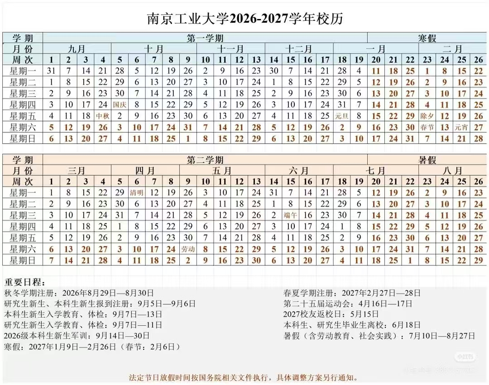

校园生活
WELCOME2026
新同学
新同学
新生行动路径
先处理眼前的事，
再慢慢认识南工。
01 / 从容出发
报到这一天，
不用手忙脚乱
把要紧的事先装进口袋。这里的内容是新生互助参考，重要时间与材料请以学校正式通知为准。
我的报到准备
0 / 4 已完成2026 - 2027 学年校历
把关键日子，
先记下来。
开学安排以学校正式通知为准。校历可先帮助你安排报到、军训、假期和回家时间。
- 新生报到注册
- 9 月 5 日 - 9 月 6 日
- 2026 级本科生军训
- 9 月 14 日 - 9 月 30 日
- 寒假
- 2027 年 1 月 9 日 - 2 月 26 日

查看完整校历 ↗
开学动态
社团、长跑、校园网
需要时再展开查看
展开
阳光长跑往年参考 · 本年度待更新
校园卡与校园网能连校 Wi-Fi · 优先校内营业厅
02 / 先熟悉，再出发
关于南工的
第一份攻略
别急着把大学过成待办清单。先去认识一条路、一扇门、一碗热汤，南工会一点点变成你的日常。
03 / 专业与培养方案
先认识你的
专业会学什么
培养方案通常由学院按专业发布，课程、学分与执行年级都可能更新。这里收录学校官网已列出的学院入口，先从自己的学院开始查。
转专业早知道
已把文件夹里的方案、流程、答疑、先修课和考试大纲分成站内专题。不同学院的笔试、面试、先修课和第二志愿规则差异都很大，先查清楚再做决定。
打开转专业专题
升升学去向按学院查看公开荣誉榜与已披露数据↗
04 / 竞赛与创新
找到你的
第一个赛场。
按学校 2024 年目录整理了学科竞赛和创新创业竞赛。可以先按自己学院或感兴趣的方向筛选，再留意学院通知中的报名安排。
127个竞赛条目33个牵头单位A - C类目录
从创新大赛、挑战杯、数学建模，到程序设计、设计、体育和专业赛事，都可以在目录里检索。目录依据 2024 年文件；具体赛程、报名资格和当年通知请以牵头单位发布为准。
浏览竞赛目录
05 / 转专业专题
想转专业，
先把规则看明白。
政策、申请流程、先修课程和考试准备已单独整理。需要时进入专题查询，不在首页堆叠整张表。
打开转专业专题
专题内可查询普通方案、流程、资料下载与特殊通道说明。
06 / 从南京，抵达南工
你会从哪一站，
走进江浦？
江浦校区位于南京浦口区。路线图用于认识城市方位；出发当天请使用实时导航核对班次、站点和报到入口。
南工江浦校区1号线10号线S1机场线
选择你的抵达点
地铁参考
打开实时导航
南京站 → 安德门 → 南京工业大学站
可优先查询地铁 1 号线在安德门换乘 10 号线的实时方案；抵达南京工业大学站后，再按当年报到点和校内指引前往。
实时导航用于确认班次、交通管制与目的地入口；具体报到入口以学校当年通知为准。